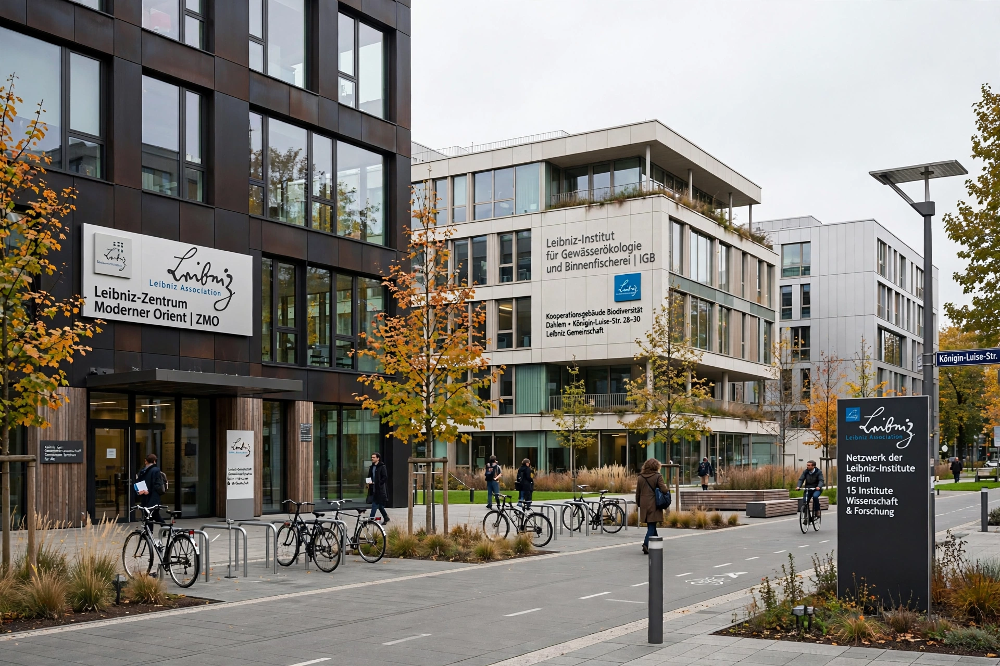

The Leibniz Association (German: Leibniz-Gemeinschaft) is a union of German non-university research institutes from various disciplines, named after the polymath Gottfried Wilhelm Leibniz. It comprises more than 90 research institutions.

| Leibniz Association | |
|---|---|
| Formation | 1995 |
| Headquarters | Berlin, Germany |
| Membership | ~97 institutes |
| Named after | Gottfried Wilhelm Leibniz |
Institutes are legally and scientifically independent, jointly funded by the federal government and the Länder, and periodically evaluated. They span economics, social sciences, life sciences, natural sciences, environmental research, humanities and research museums.